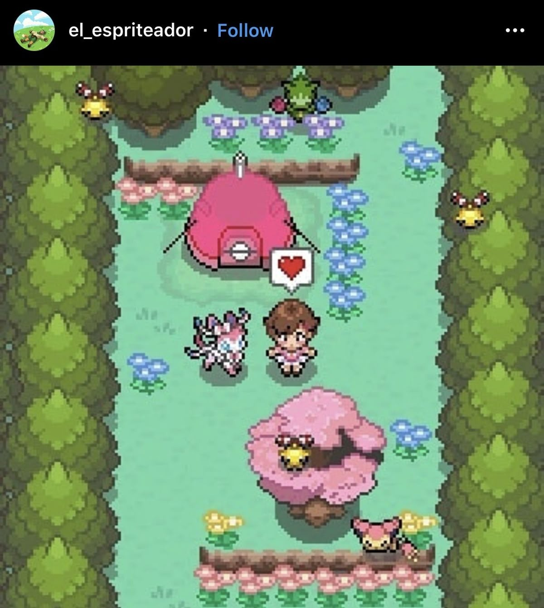
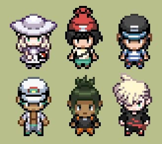
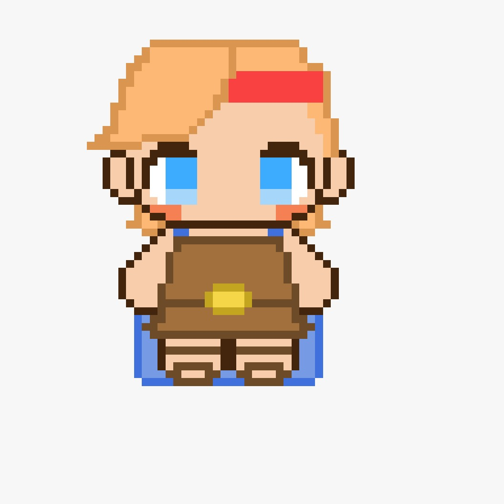
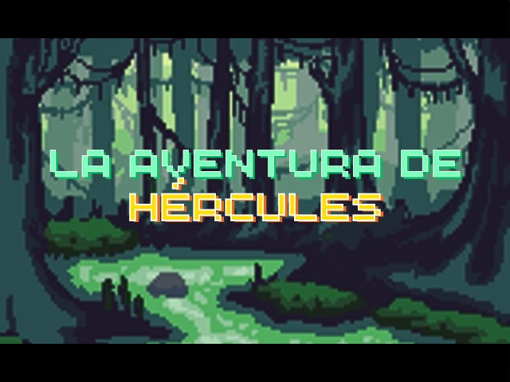
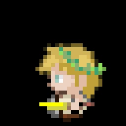
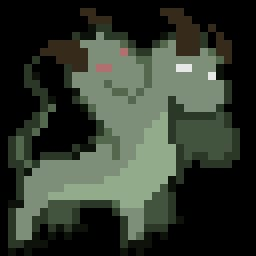

SINOPSIS
Hidra vs. Hércules es un juego de batalla por turnos donde encarnas a la famosa Hidra de Lerna. Cada turno elegís tus ataques y estrategias para derrotar a Hércules, quien responde automáticamente. ¿Podrás cambiar el mito original y vencer al héroe más fuerte de Grecia? Basado en el mito de la Hidra de Lerna, uno de los Doce Trabajos de Hércules En este juego, la historia se invierte: vos decidís si la Hidra puede sobrevivir y derrotar al héroe.
CREACIÓN DEL JUEGO
Programado en Visual Studio Code e ilustrado por sus autores, "HidravsHercules" es un proyecto que mezcla programación, arte y mitología para crear una experiencia compacta y entretenida. Con el paso de los meses tanto el codigo, los bocetos como la idea fueron evolucionando; el resultado es un juego de batalla por turnos que invita a los jugadores a sumergirse en un mundo mitológico y estratégico. Pero, ¿cómo llegamos a esto? Todo comenzó con una idea simple, buscar un mito interesante y que uno como espectador pudiera forjar su propio destino, escribir su historia; Conseguir vencer al semidios Hércules o ser derrotado por él. Luego de varias lluvias de ideas y debates, nos decidimos por la Hidra de Lerna, un monstruo fascinante con múltiples cabezas que ofrecía muchas posibilidades estratégicas para el juego. A partír de ahí fue todo más sencillo, pensamos entonces en un juego estilo batalla por turnos, que no solo nos hace recordar aquellos clasicos como Pokemón, sino que tambien nos desafía como jugadores a pensar y planificar nuestra jugada.   El momento de tomar el lapiz y dibujar no fue facil, a pesar de tener de donde sacar la inspiración (hay que reconocer que la mitología griega está llena de criaturas y héroes visualmente impresionantes), plasmar esas ideas en papel requirió paciencia y dedicación. Cada boceto fue refinado hasta capturar la esencia de los personajes y el ambiente del juego, fusionando lo clasico del pixelart con lo mitologico y fantastico del relato; Así pasamos de varias ideas hasta conseguir al semidios que tenemos hoy en día y al monstruo cuyos ataques y movimientos controlamos.  
INSPIRACIÓN
Basado en el mito de la Hidra de Lerna, uno de los doce trabajos del heroe. En este juego, la historia se invierte: vos decidís si la Hidra puede sobrevivir y derrotar al héroe.
HÉRCULES
Hércules, también conocido como Heracles, es uno de los personajes más reconocidos de la mitología griega, famoso por sus increíbles proezas, su fuerza sobrehumana y su valentía inigualable.
Más información sobre HérculesHIDRA
La Hidra de Lerna era un monstruo en la mitología griega. Tenía muchas cabezas y cada vez que alguien cortaba una de ellas, dos cabezas más salían del muñón. Era uno de los vástagos de Tifón y Echidna, el padre y la madre de todos los monstruos respectivamente. Vivía en el lago Lerna en la región de Argolid en el Peloponeso.
Más información sobre la Hidra de LernaINTEGRANTES
Lihué Milano, Alan Pérsico
Estudiantes de Diseño Multimedial